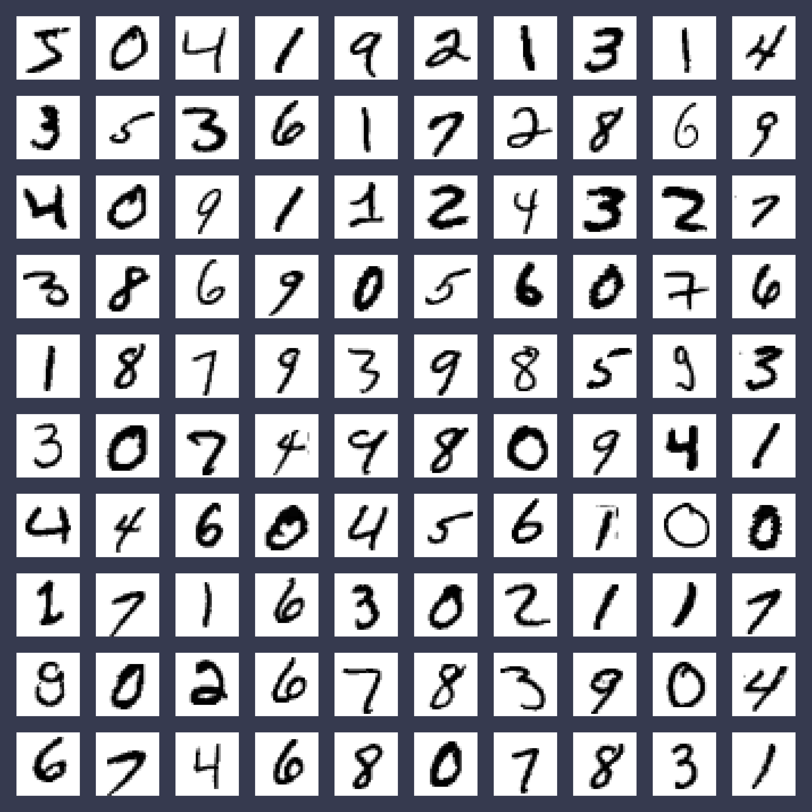
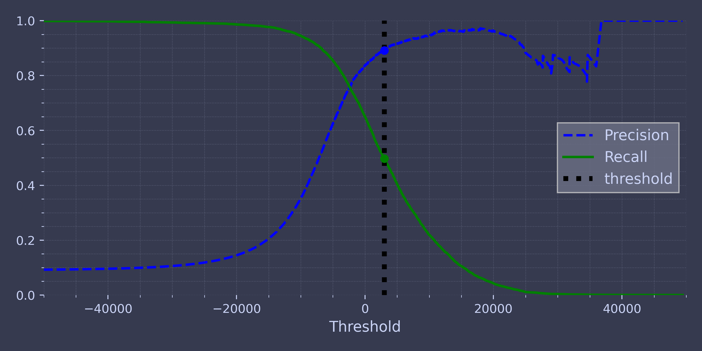
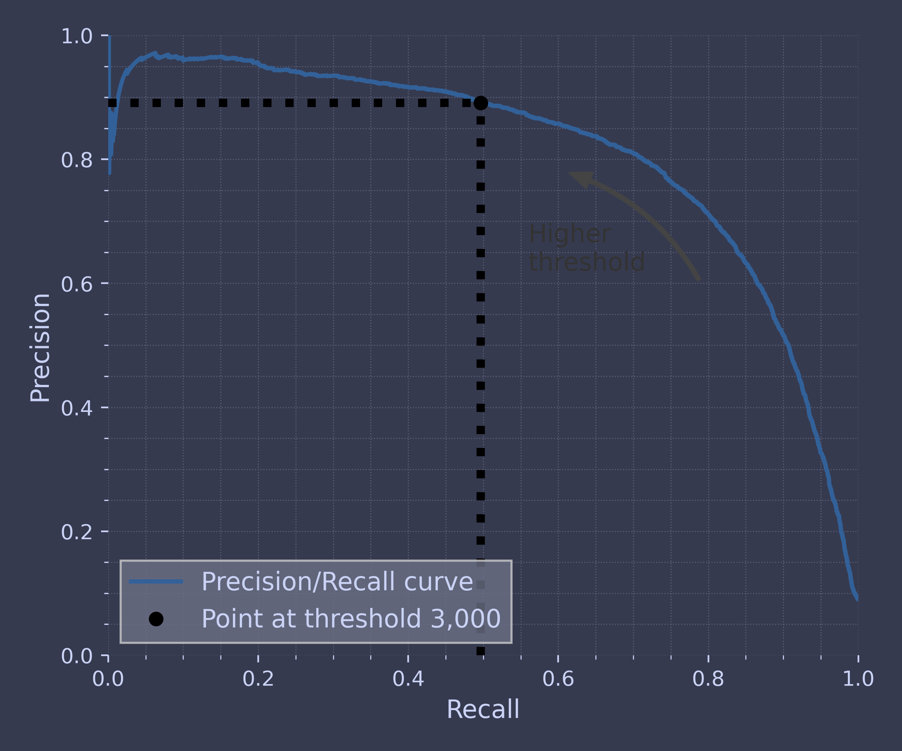
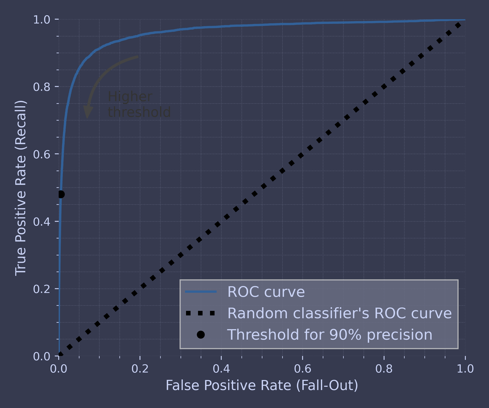

Code for Machine Learning and Data Science II Classification
Table of Contents
These are the code snippets used in Classification part of Machine Learning and Data Science II.
Introduction
The following code uses the standard matplotlib along with the custom ChalcedonPy which is detailed in its source code here.
The code is used primarily in the following code as a means to save figures for use in slides.
import matplotlib.pyplot as plt import ChalcedonPy as cp # Initialise ChalcedonPy cp.init(save_path="Classification", display_mode="slide")
MNIST
Download Initial Data
from sklearn.datasets import fetch_openml mnist = fetch_openml('mnist_784', as_frame=False)
For more info on the sklearn.datasets.fetch_openml click here. However for our application two parameters are used.
| PARAMETER | DESCRIPTION |
|---|---|
| name | String identifier of the dataset. Note that OpenML can have multiple datasets with the same name. |
| as_frame | If True, the data is a pandas DataFrame including columns with appropriate dtypes, if false e data and target will be NumPy arrays and the data will only contain numerical values |
mnist.keys()
dict_keys(['data', 'target', 'frame', 'categories', 'feature_names', 'target_names', 'DESCR', 'details', 'url'])
X, y = mnist.data, mnist.target print(X)
[[0 0 0 ... 0 0 0] [0 0 0 ... 0 0 0] [0 0 0 ... 0 0 0] ... [0 0 0 ... 0 0 0] [0 0 0 ... 0 0 0] [0 0 0 ... 0 0 0]]
print(X.shape)
(70000, 784)
print(y.shape)
(70000,)
import matplotlib.pyplot as plt def plot_digit(image_data): image = image_data.reshape(28, 28) plt.imshow(image, cmap="binary") plt.axis("off") some_digit = X[0] plot_digit(some_digit) cp.store_fig("some-digits-plot", close = True)
print(y[0])
5
plt.figure(figsize=(9, 9)) for idx, image_data in enumerate(X[:100]): plt.subplot(10, 10, idx + 1) plot_digit(image_data) plt.subplots_adjust(wspace=0, hspace=0) cp.store_fig("more-digits-plot", close = True)

X_train, X_test, y_train, y_test = X[:60000], X[60000:], y[:60000], y[60000:]
Training a Binary Classifier
y_train_5 = (y_train == '5') # True for all 5s, False for all other digits y_test_5 = (y_test == '5')
from sklearn.linear_model import SGDClassifier sgd_clf = SGDClassifier(random_state=42) sgd_clf.fit(X_train, y_train_5)
SGDClassifier(random_state=42)
sgd_clf.predict([some_digit])
[ True]
Performance Measures
Measuring Accuracy Using Cross-Validation
from sklearn.model_selection import cross_val_score cross_val_score(sgd_clf, X = X_train,y = y_train_5, cv=3, scoring="accuracy")
[0.95035 0.96035 0.9604 ]
| PARAMETER | DESCRIPTION |
|---|---|
| estimator | The object to use to fit the data. |
| X | The data to fit. Can be for example a list, or an array. |
| y | The target variable to try to predict in the case of supervised learning. |
| cv | Determines the cross-validation splitting strategy. |
| scoring | A str (see model evaluation documentation) or a scorer callable object / function with signature scorer(estimator, X, y) which should return only a single value. |
from sklearn.model_selection import StratifiedKFold from sklearn.base import clone skfolds = StratifiedKFold(n_splits=3) # add shuffle=True if the dataset is not # already shuffled for train_index, test_index in skfolds.split(X_train, y_train_5): clone_clf = clone(sgd_clf) X_train_folds = X_train[train_index] y_train_folds = y_train_5[train_index] X_test_fold = X_train[test_index] y_test_fold = y_train_5[test_index] clone_clf.fit(X_train_folds, y_train_folds) y_pred = clone_clf.predict(X_test_fold) n_correct = sum(y_pred == y_test_fold) print(n_correct / len(y_pred))
0.95035 0.96035 0.9604
from sklearn.dummy import DummyClassifier dummy_clf = DummyClassifier() dummy_clf.fit(X_train, y_train_5) print(any(dummy_clf.predict(X_train)))
False
cross_val_score(dummy_clf, X_train, y_train_5, cv=3, scoring="accuracy")
[0.90965 0.90965 0.90965]
Confusion Matrix
from sklearn.model_selection import cross_val_predict y_train_pred = cross_val_predict(sgd_clf, X_train, y_train_5, cv=3)
from sklearn.metrics import confusion_matrix cm = confusion_matrix(y_train_5, y_train_pred) cm
[[53892 687] [ 1891 3530]]
y_train_perfect_predictions = y_train_5 # pretend we reached perfection confusion_matrix(y_train_5, y_train_perfect_predictions)
[[54579 0] [ 0 5421]]
Presicion and Recall
from sklearn.metrics import precision_score, recall_score precision_score(y_train_5, y_train_pred) # == 3530 / (687 + 3530)
0.8370879772350012
print(cm[1, 1] / (cm[0, 1] + cm[1, 1]))
0.8370879772350012
print(recall_score(y_train_5, y_train_pred))
0.6511713705958311
print(cm[1, 1] / (cm[1, 0] + cm[1, 1]))
0.6511713705958311
from sklearn.metrics import f1_score print(f1_score(y_train_5, y_train_pred))
0.7325171197343847
print(cm[1, 1] / (cm[1, 1] + (cm[1, 0] + cm[0, 1]) / 2))
0.7325171197343847
Precision-Recall Trade-off
y_scores = sgd_clf.decision_function([some_digit]) print(y_scores)
[2164.22030239]
threshold = 0 y_some_digit_pred = (y_scores > threshold) print(y_some_digit_pred)
[ True]
threshold = 3000 y_some_digit_pred = (y_scores > threshold) print(y_some_digit_pred)
[False]
y_scores = cross_val_predict(sgd_clf, X_train, y_train_5, cv=3, method="decision_function")
from sklearn.metrics import precision_recall_curve precisions, recalls, thresholds = precision_recall_curve(y_train_5, y_scores)
plt.figure(figsize=(8, 4)) # extra code – it's not needed, just formatting plt.plot(thresholds, precisions[:-1], "b--", label="Precision", linewidth=2) plt.plot(thresholds, recalls[:-1], "g-", label="Recall", linewidth=2) plt.vlines(threshold, 0, 1.0, "k", "dotted", label="threshold") # extra code – this section just beautifies and saves Figure 3–5 idx = (thresholds >= threshold).argmax() # first index ≥ threshold plt.plot(thresholds[idx], precisions[idx], "bo") plt.plot(thresholds[idx], recalls[idx], "go") plt.axis([-50000, 50000, 0, 1]) plt.xlabel("Threshold") plt.legend(loc="center right") cp.store_fig("precision-recall-comparison", close=True)

import matplotlib.patches as patches # extra code – for the curved arrow plt.figure(figsize=(6, 5)) # extra code – not needed, just formatting plt.plot(recalls, precisions, linewidth=2, label="Precision/Recall curve") # extra code – just beautifies and saves Figure 3–6 plt.plot([recalls[idx], recalls[idx]], [0., precisions[idx]], "k:") plt.plot([0.0, recalls[idx]], [precisions[idx], precisions[idx]], "k:") plt.plot([recalls[idx]], [precisions[idx]], "ko", label="Point at threshold 3,000") plt.gca().add_patch(patches.FancyArrowPatch( (0.79, 0.60), (0.61, 0.78), connectionstyle="arc3,rad=.2", arrowstyle="Simple, tail_width=1.5, head_width=8, head_length=10", color="#444444")) plt.text(0.56, 0.62, "Higher\nthreshold", color="#333333") plt.xlabel("Recall") plt.ylabel("Precision") plt.axis([0, 1, 0, 1]) plt.legend(loc="lower left") cp.store_fig("precision-recall-comparison-2", close=True)

idx_for_90_precision = (precisions >= 0.90).argmax() threshold_for_90_precision = thresholds[idx_for_90_precision] print(threshold_for_90_precision)
3370.019499144183
y_train_pred_90 = (y_scores >= threshold_for_90_precision) print(precision_score(y_train_5, y_train_pred_90))
0.9000345901072293
recall_at_90_precision = recall_score(y_train_5, y_train_pred_90) print(recall_at_90_precision)
0.4799852425751706
The ROC Curve
from sklearn.metrics import roc_curve fpr, tpr, thresholds = roc_curve(y_train_5, y_scores)
idx_for_threshold_at_90 = (thresholds <= threshold_for_90_precision).argmax() tpr_90, fpr_90 = tpr[idx_for_threshold_at_90], fpr[idx_for_threshold_at_90] plt.figure(figsize=(6, 5)) # extra code – not needed, just formatting plt.plot(fpr, tpr, linewidth=2, label="ROC curve") plt.plot([0, 1], [0, 1], 'k:', label="Random classifier's ROC curve") plt.plot([fpr_90], [tpr_90], "ko", label="Threshold for 90% precision") # extra code – just beautifies and saves Figure 3–7 plt.gca().add_patch(patches.FancyArrowPatch( (0.20, 0.89), (0.07, 0.70), connectionstyle="arc3,rad=.4", arrowstyle="Simple, tail_width=1.5, head_width=8, head_length=10", color="#444444")) plt.text(0.12, 0.71, "Higher\nthreshold", color="#333333") plt.xlabel('False Positive Rate (Fall-Out)') plt.ylabel('True Positive Rate (Recall)') plt.axis([0, 1, 0, 1]) plt.legend(loc="lower right", fontsize=13) cp.store_fig("roc-curve-plot", close=True)

from sklearn.metrics import roc_auc_score print(roc_auc_score(y_train_5, y_scores))
0.9604938554008616
from sklearn.ensemble import RandomForestClassifier forest_clf = RandomForestClassifier(random_state=42)
Multi-Class Classification
from sklearn.svm import SVC svm_clf = SVC(random_state=42) svm_clf.fit(X_train[:2000], y_train[:2000])
print(svm_clf.predict([some_digit]))
['5']
some_digit_scores = svm_clf.decision_function([some_digit]) print(some_digit_scores.round(2))
[[ 3.79 0.73 6.06 8.3 -0.29 9.3 1.75 2.77 7.21 4.82]]
print(svm_clf.classes_)
['0' '1' '2' '3' '4' '5' '6' '7' '8' '9']
from sklearn.multiclass import OneVsRestClassifier ovr_clf = OneVsRestClassifier(SVC(random_state=42)) ovr_clf.fit(X_train[:2000], y_train[:2000])
print(ovr_clf.predict([some_digit])) print(len(ovr_clf.estimators_))
['5'] 10
sgd_clf = SGDClassifier(random_state=42) sgd_clf.fit(X_train, y_train) print(sgd_clf.predict([some_digit]))
['3']
sgd_clf.decision_function([some_digit]).round()
[[-31893. -34420. -9531. 1824. -22320. -1386. -26189. -16148. -4604. -12051.]]
cross_val_score(sgd_clf, X_train, y_train, cv=3, scoring="accuracy")
[0.87365 0.85835 0.8689 ]